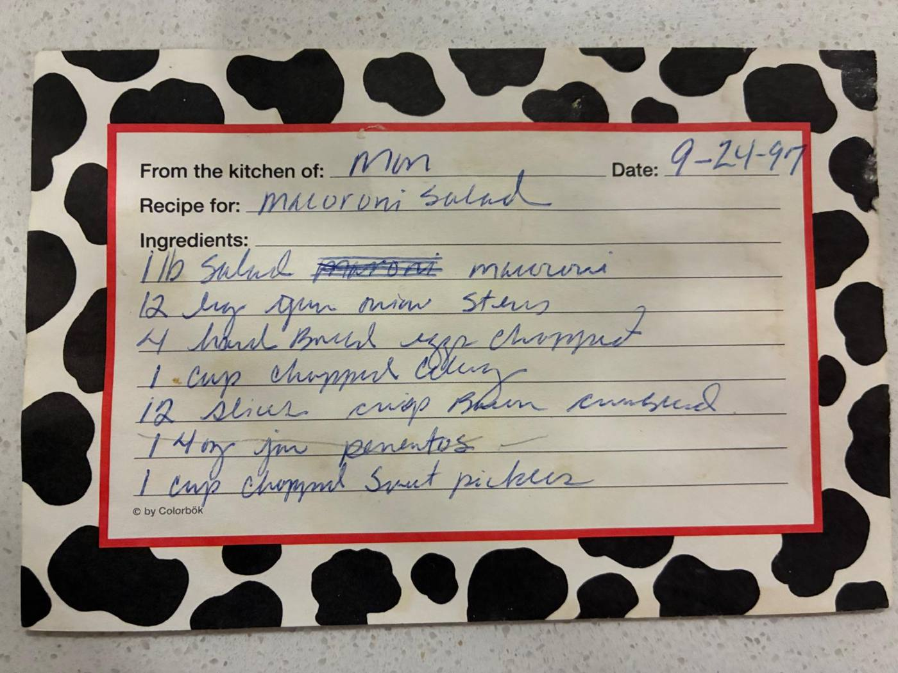
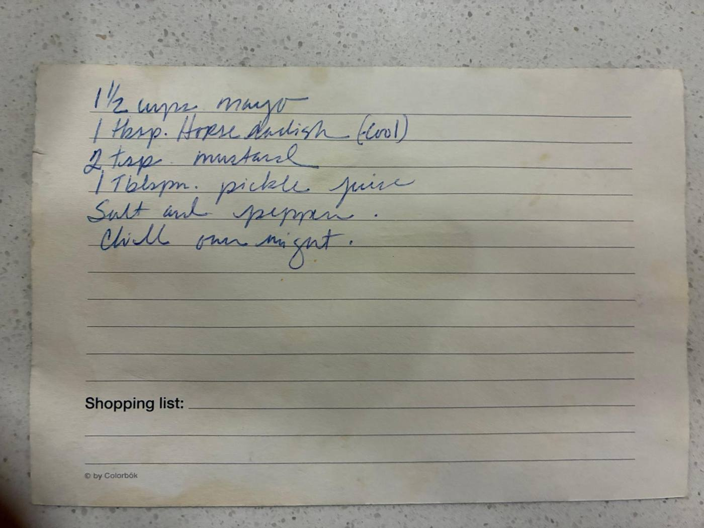

Salads
Macaroni Salad
From the kitchen of Mom
ChillOvernight


Mom's original card (front and back) · tap to enlarge
Ingredients
Salad
Dressing
Method tap a step to mark it done
- Cook the macaroni according to the package, drain, rinse with cold water and let it cool.
- Mix the mayonnaise, horseradish, mustard and pickle juice, and season with salt and pepper.
- Combine the macaroni with the green onions, eggs, celery, bacon, pimentos and pickles. Stir in the dressing.
- Chill overnight.